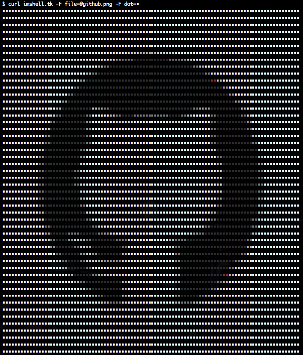

Imshell
画像をシェルで表示可能な形式に変換するサービス
1. ローカルの画像を変換
$ curl imshell.tk -F file=@yourimg.png
2. 画像URLから変換
$ curl imshell.tk -d url=http://.../target.png
3. オプションの使用例
$ curl imshell.tk -d dot=■ -d size=60 -d url=http://.../target.png
$ curl imshell.tk -F dot=■ -F size=30 -F file=@target.png
4. DEMO
$ curl imshell.tk -d dot=■ -d url=https://raw.githubusercontent.com/rskull/Imshell/gh-pages/images/github.png
